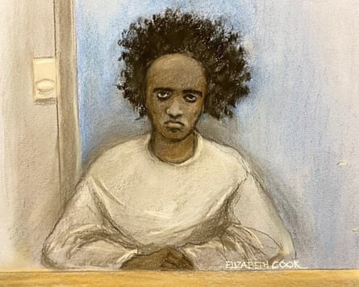
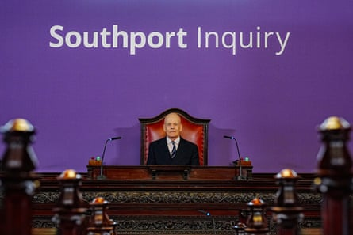

The inquiry into the Southport attack will examine the “wholesale failure” of multiple institutions to prevent “one of the most egregious crimes in our country’s history”, its chair has said in his opening remarks.
Sir Adrian Fulford said the murder of three girls appeared “far from being an unforeseeable catastrophic event” given Axel Rudakubana’s well-known obsession with extreme violence.
The inquiry at Liverpool town hall will examine missed opportunities to prevent the killing of Bebe King, six; Elsie Dot Stancombe, seven; and Alice da Silva Aguiar, nine; and the attempted murder of 10 others at a Taylor Swift-themed holiday club in Southport on 29 July last year.
Fulford, a retired senior judge, said the hearings would not turn into an “exercise of papering over the cracks” but would be a “real engine for change” in exposing failures. He said it would recommend “all of the changes that urgently need to be made”.
The three victims of the knife attack, from left: Elsie Dot Stancombe; Bebe King; and Alice AguiarComposite: Merseyside police
He said he would consider sweeping changes to the justice system, including whether courts should be given powers to impose restrictions on individuals known to pose a risk but when there was insufficient evidence to justify an arrest.
Rudakubana, 18, was referred to Prevent three times between December 2019 and April 2021 after expressing extremist views but his case was never escalated. The teenager, who was born in Cardiff to Rwandan parents, had been on the police radar since he was 13, when he admitted having murderous thoughts about another pupil. He later attacked a fellow student and was found with a knife on a bus.
He had a deep interest in extreme violence , which was known to social services, and had bought a cache of weapons including machetes, a bow and arrow, a sledgehammer, materials to make petrol bombs and had started producing ricin, a deadly poison.
Rudakubana, who lived with his parents in the Lancashire village of Banks, five miles from Southport, had also downloaded a version of an al-Qaida training manual which was banned under terrorism laws.
He was jailed for a minimum of 52 years in January after pleading guilty to the offences on the first day of his trial.
Axel Rudakubana was jailed for a minimum of 52 years in January.Photograph: Elizabeth Cook/PA
In his opening remarks on Tuesday, Fulford said it appeared clear that “far from being an unforeseeable catastrophic event, the perpetrator posed a very serious and significant risk of violent harm, with a particular and known predilection for knife crime”.
He said Rudakubana’s ability to access gravely violent material, order knives on Amazon and leave home unsupervised to commit the atrocity “speaks to a wholesale and general failure to intervene effectively, or indeed at all, to address the risks that he posed”.
Fulford said he would assess whether the state should have new powers to impose restrictions on individuals when there was strong evidence they intended to carry out an attack but not enough to justify an arrest.
He will examine whether courts should impose a curfew, require a tag, limit internet use or require psychological intervention. However, Fulford added: “Would such a development run counter to the basic underpinnings of our democracy and our core civil liberties?”
Sir Adrian Fulford in the hearing room at Liverpool town hall on Tuesday before the start of the Southport inquiry.Photograph: Peter Byrne/PA
He said Rudakubana was responsible for “one of the most egregious crimes in our country’s history” and would only be referred to as “AR” or “the perpetrator” for the remainder of the inquiry.
He added: “However hard we try, ordinary language simply fails to reflect the enormity of what he did on 29 July last year. None of the most powerful adjectives even begin to suffice: there are no words that adequately describe what occurred and I am not going to try, and then fail, to find them.”
The inquiry will on Wednesday hear evidence from the parents of three of the surviving girls who were stabbed and one who witnessed the attack. Hearings will resume on 8 September with evidence from other families before concluding in November.